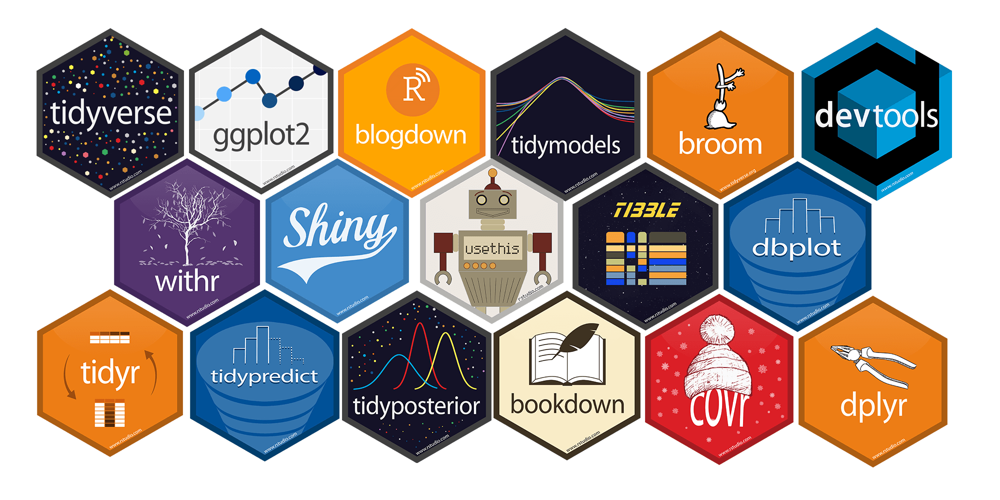
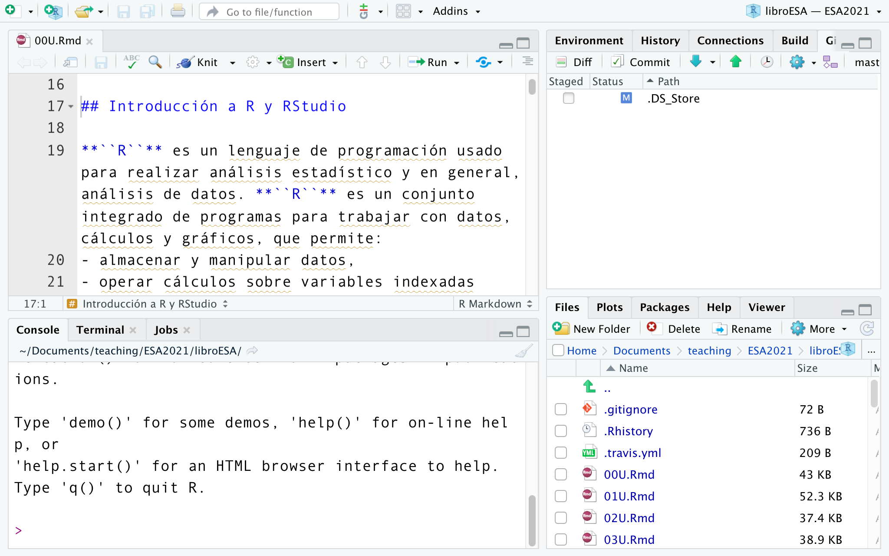
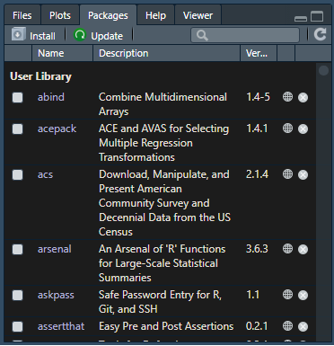
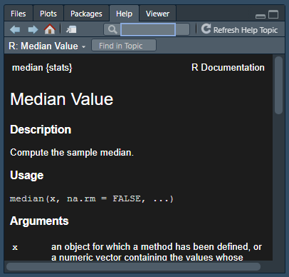

1.1 Introducción a R y RStudio
R es un lenguaje de programación usado para realizar análisis estadístico y en general, análisis de datos. R es un conjunto integrado de programas para trabajar con datos, cálculos y gráficos, que permite:
almacenar y manipular datos,
operar cálculos sobre variables indexadas (como las matrices),
analizar datos con una colección de herramientas,
aplicar herramientas gráficas para el análisis de datos y,
programar con un lenguaje sencillo y en constante desarrollo.
Gráfico 1.1: Logo de R
R es el lenguaje de programación más elegido debido a tres ventajas principales:
accesibilidad: cualquiera puede descargar el programa de manera gratuita,
código abierto: quien desee modificar el código de
R, puede hacerlo, ycomunidad de usuarios: existe una actividad permanente alrededor de
R, que brinda soporte a los usuarios para resolver dudas y aprender en línea.
1.1.1 El entorno de R
Rse puede entender como el entorno donde se implementan múltiples técnicas estadísticas. El concepto de “entorno” se refiere a que es un sistema diseñado específicamente para el análisis de datos, que posee coherencia interna y que es más que el agregado de cada una de las herramientas que lo conforman.Gracias a la implementación de
Rse han desarrollado numerosos métodos interactivos para analizar datos. Los usuarios deRse han ido aggiornando con cada versión del programa que ha salido, añadiendo métodos que acompañan las nuevas tecnologías.
1.1.2 Aplicar estadística en R
Como se dijo previamente, el entorno de
Rpermite desplegar técnicas estadísticas, de las más antiguas hasta la más actuales. Esta ventaja no es proporcional al esfuerzo que implica buscar las herramientas del programa que permiten su aplicación.Lo que diferencia a
Rde otros sistemas de análisis estadísticos como Stata y SPSS es que el output que se genera es escueto comparado con la cantidad de comandos (o “input”) que se deben imprimir para obtenerlo. Cada uno de los pasos a seguir se van almacenando en forma de “objetos,” que quedan disponibles para la observación y el análisis del usuario.Algunas técnicas estadísticas están incluidas en el entorno básico de
Ry otras se pueden obtener en forma de bibliotecas, llamadas paquetes (packages).
Gráfico 1.2: Logos de algunos paquetes de R
1.1.3 Descargar e instalar R
Para descargar R es posible ingresar a https://cran.r-project.org/. Luego, se debe seleccionar el sistema operativo de cada computadora donde se lo desea instalar y, a consiguiente, comenzará la instalación.
Gráfico 1.3: R

1.1.4 RStudio
RStudio es un entorno de desarrollo integrado (IDE, en inglés), que significa que contiene todas las herramientas que se necesitan en un mismo lugar. Las maneras más sencilla de “comunicarse” con R son:
escribiendo líneas de comandos que conforman el código en la terminal o bien,
utilizando RStudio, que hace más atractiva y fácil la aproximación al programa.
Gráfico 1.4: Terminal de R

1.1.5 Descargar e instalar RStudio
Se debe ingresar al siguiente enlace: https://www.rstudio.com/products/rstudio/download/
Gráfico 1.5: Logo de RStudio
Gráfico 1.6: Descarga de RStudio

1.1.6 Las partes de RStudio
Las secciones que conforman RStudio son cuatro:
la fuente (en la parte superior izquierda),
el entorno (parte superior derecha),
la consola (parte inferior izquierda) y
la sección de “documentos, gráficos, paquetes y ayuda” (parte inferior derecha).
Gráfico 1.7: R

1.1.7 RStudio
Cuando uno abre RStudio, de forma predeterminada, se ve de la siguiente manera:
Gráfico 1.8: RStudio Escritorio
Básicamente, la interfaz se compone de diferentes paneles. Sobre el lado izquierdo hay un panel grande y en el lado derecho hay dos paneles más pequeños. Al comenzar a trabajar en
RStudio, habrá un cuarto panel que se activa al abrir un nuevo documento.Al crear ese nuevo archivo hay cuatro paneles: dos a la izquierda y dos a la derecha. Es posible ajustar estos paneles moviendo la barra que los separa. También se puede deslizar el divisor del medio para ajustar el ancho de los paneles y en el lado derecho también es posible ajustar las alturas relativas de estos paneles.
En la esquina de cada panel hay un botón de minimizar, para ocultar cualquier panel. Se puede maximizar nuevamente haciendo clic sobre el mismo o en el botón que muestra dos paneles.
Esta es la forma predeterminada para configurar
RStudio. Cualquier documento que se cree se encontrará en el panel superior izquierdo mientras que en el inferior izquierdo está la consola deR, que es un área donde se pueden escribir comandos directamente. En el lado derecho, el panel superior es básicamente información sobre el entorno en el que está trabajando.En la parte inferior derecha hay un panel que tiene varias pestañas. El primero permite ver la estructura de los archivos, por lo que es parecido a una ventana estándar que se usa para navegar en cualquier sistema operativo.
Gráfico 1.9: panel Derecho Inferior de RStudio

- Hay una pestaña que enumera los paquetes que se han instalado.
Gráfico 1.10: Paquetes de RStudio
La otra es una pestaña de ayuda, ya que en
R, si uno desea ayuda sobre cualquier cosa, se la puede obtener escribiendo un signo de interrogación y luego el nombre del objeto sobre el que desea ayuda:Se puede ver que, al ejecutar ese comando, se obtiene un archivo de ayuda sobre la media. También es posible obtener uno sobre la mediana, y así sucesivamente.
Se obtendrá:
Gráfico 1.11: R
- Entonces, si uno quiere ayuda, aparecerá en dicha pestaña. Hay que tener en cuenta que es posible modificar la configuración de estos paneles. Los pasos para hacerlo son:
Menú > Herramientas
- Dentro de herramientas (tools) se encuentran las ‘Opciones globales’ (global options). Este menú ofrece todo tipo de posibilidades para configurar
RStudioy el entorno. Para cambiar la ubicación de la consola y el entorno, hay que clicar arriba, donde dice ‘Entorno,’ sobre el cuadro desplegable y aplicarlo. Al volver, se verá en el lado izquierdo, el documento en el que se está trabajando y debajo, el panel de ‘Entorno.’
Gráfico 1.12: RStudio Opciones Globales

- También es posible cambiar el color del esquema, dentro de las ‘Opciones globales’ puedes ver algunas opciones de apariencia. El tema predeterminado tiene blanco de fondo con un texto en negro. Pero no es el único, sino que existen diferentes temas que se pueden aplicar.
Gráfico 1.13: Selección de Colores en RStudio